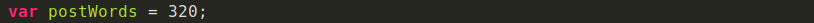

Una buena práctica para escribir código: nombrar elementos
¿Les ha pasado que están súper inspirados escribiendo código pero repentimamente necesitan una
luz divina que les diga qué nombre ponerle a la variable que están a punto de
escribir?
Como Fronted hay tantas cosas que debo nombrar en mi día a día: clases para cada elemento HTML,
variables en Stylus que pueden ser reutilizables, componentes, archivos, funciones... Tengo que ponerle a
volar mi imaginación para poder lograrlo.
A pesar de que es algo que depende totalmente de nosotros no hay una forma estrictamente correcta
o incorrecta de hacerlom nombrar cada elemento es un trabajo en el que debemos poner empeño,
pues se verá impactado en la organización y mantenibilidad de nuestro código.
Fanny es parte del Team Platzi. si quieres una carrera en Frintend, empieza por el Curso de Desarrollo Web
y luego el Curso de Responsive Design.
Lo más importante es que el nombre que le asignes siempre refleje el trabajo que está haciendom de esta forma
podemos incluso reducir la necesidad de comentar cada linea de código con su funcionamiento.
A continuación algunos consejos que hay que seguir para evitar algún desastre a la hora de nombrar
un elemento en tu código.
Nombres descriptivos
Nombres conformados por un conjunto de palabras
La longitud de el nombre asignado
Nombres descriptivos
Abreviar nombres puede que en algunos casos no sea tan buena idea. Seguramente con el paso del
tiempo o cuando un nuevo desarrollado tenga que darle mantenimineto a tu código habrá quedado en el olvido lo que esa variable representa.
Lo ideal es utilizar nombres que describan la funcionalidad de nuestro código.
Por ejemplo, es mucho más descriptivo escribir:
Que:
Nombres conformados por un conjunto de palabras
Generalmente los lenguajes de programación no permiten espacios en las variables.
Sin embargo hay distintos métodos para separar el conjunbto de palabras que conforman
una variable y que esta manera logren ser más legibles. Esto se puede hacer
capitalizando cada palabra agrupada(camelCase) o separando capitalizando palabra con underscore(snake_case).e_case).
Por ejemplo:
o

La longitud de el nombre asignado
A pesar de que los nombres de variables cortos deben ser sustituidos por nombres de variables más largos y descriptivos,
no quiere decir que tenemos que usar frases completas. Es importante que el nombre describa qupe es lo que el código asignado
hace y no como lo hace. Utilizar un nombre largo puede incluso ser más suceptible a errores tipográficos
a la hora de escribirlo. Se dice que la longitud recomendable es de 2 a 4 palabras o entre 8 y 20 caracteres.
En conclusión nombrar elementos no es díficil, más bien es un súper poder o habilidad que va mejorando con la práctica. Nosotros como desarrolladores
tenemos la responsabilidad de hacerlo lo mejor posible.
si Recién comienzas a programas, te invito al Curso de programación básica para empezar a implementar estos consejos en tus proyectos. Y si llevas
ya tiempo programando sin hacer uso de ellos, compártenos como te va siguiendo estas
recomendaciones. Estoy segura que los desarrolladores que se topen con tu código en el futuro te lo agradecerán.